가입자 2,000만 명에 근접한 캐시슬라이드
당시 캐시슬라이드는 성숙기에 접어든 대표 리워드 서비스였습니다. NBT는 광고 확인을 넘어 사용자의 일상 행동 자체로 혜택 경험을 확장하는 후속 서비스를 전개하고 있었습니다.
만보기보다, 계속 걷게 만드는 경험을 설계했습니다.
당시 캐시슬라이드는 성숙기에 접어든 대표 리워드 서비스였습니다. NBT는 광고 확인을 넘어 사용자의 일상 행동 자체로 혜택 경험을 확장하는 후속 서비스를 전개하고 있었습니다.
NBT는 스텝업을 사람들이 매일 반복하는 활동에 혜택을 더하는 확장 서비스로 소개했습니다. 단순히 걸음을 세는 것보다 매일 다시 사용할 이유를 만드는 것이 더 중요한 과제가 됐습니다.
걸음 수·거리·칼로리·시간을 보여주고 걷는 만큼 캐시를 제공하는 전형적인 만보기형 리워드 경험에서 출발했습니다.
측정 자체보다 목표, 보상, 메이트와의 상호작용을 통해 사용자가 다시 돌아오고 걷는 행동을 반복하게 만드는 구조로 제품의 중심을 옮겼습니다.
측정하는 서비스에서,
다시 돌아오게 만드는 서비스로.
2018년 공개 정책 기준, 50보마다 1캐시를 지급해 행동과 보상이 멀어지지 않게 했습니다.
사용자가 목표 걸음 수를 설정하고 달성하면 최대 1,000캐시를 추가로 받을 수 있었습니다.
매일 1만 보를 걸을 경우 한 달 약 6,000캐시라는 구체적인 누적 가치를 제시했습니다.
초기 공개 기준 카페·영화관 등 60여 제휴처 모바일 상품권과 현금 전환으로 보상의 실질성을 높였습니다.
오늘 걸음 수와 거리·시간·칼로리, 적립 상태를 한 화면에서 빠르게 확인하도록 기본 Utility 경험은 최대한 명확하게 유지했습니다.
캐릭터를 장식 요소로 두지 않고 응원과 추가 적립을 제공하는 산책 메이트로 사용해 정서적 동기와 기능적 보상을 연결했습니다.
출석, 목표 달성, 미션 등 서로 다른 보상 접점을 배치해 한 번의 적립으로 행동이 끝나지 않고 다음 행동으로 이어지게 했습니다.
오늘의 성취와 누적 기록을 확인하고 다시 목표를 세우는 구조를 통해 만보기 사용을 일회성 확인이 아닌 일상의 반복 경험으로 전환했습니다.
기록, 확인, 메이트의 반응, 보상, 다음 목표가 하나의 행동 루프로 이어지도록 설계했습니다.
일상 속 걸음을
자동으로 기록
오늘의 걸음과
목표 진행을 확인
캐릭터의 반응으로
정서적 동기 부여
달성 즉시 캐시와
다음 미션을 제공
작은 성취가 다음 날의
행동으로 연결
실제 제작 화면을 기준으로, 기본 기록·통계·메이트·출석·목표 보상·미션의 역할을 나눴습니다.
오늘의 걸음은 즉시 확인하고, 목표·메이트·출석·미션은 다음 행동의 이유를 더합니다. 모든 화면은 기록의 확인에서 끝나지 않고 리워드와 재방문으로 연결됩니다.
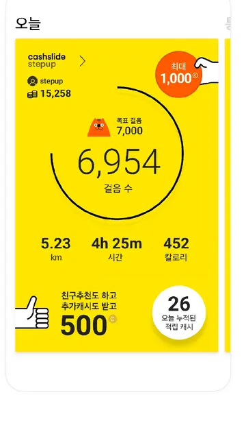
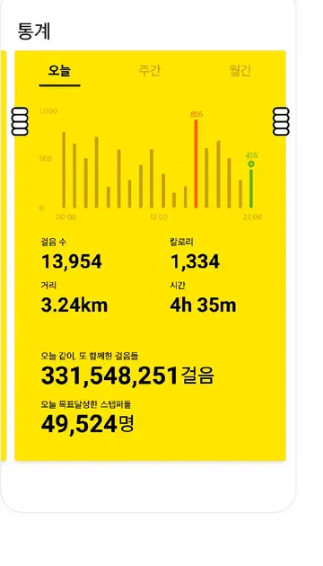
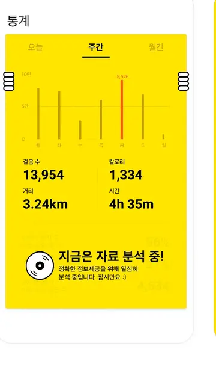
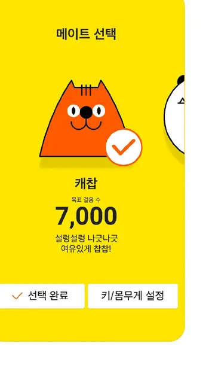
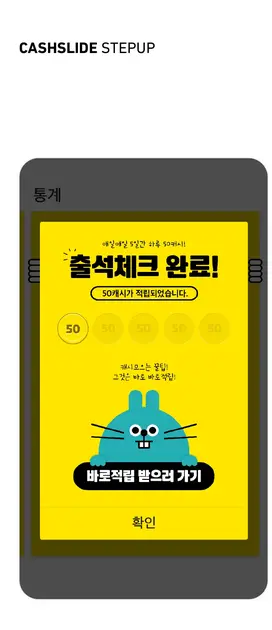
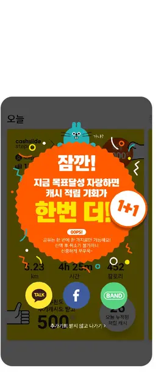
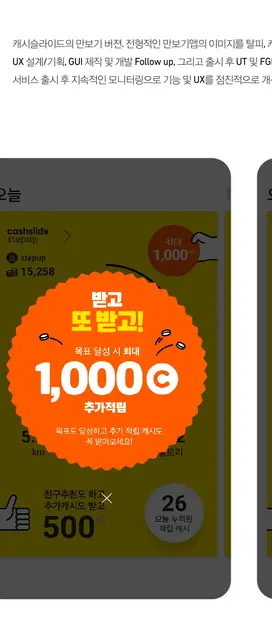
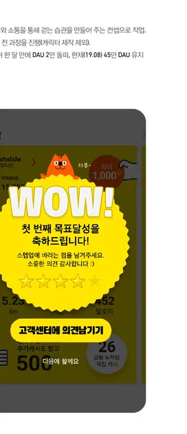
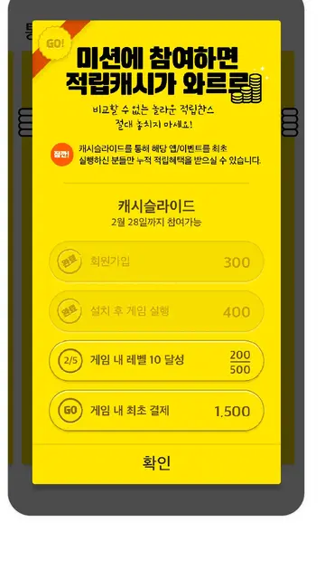
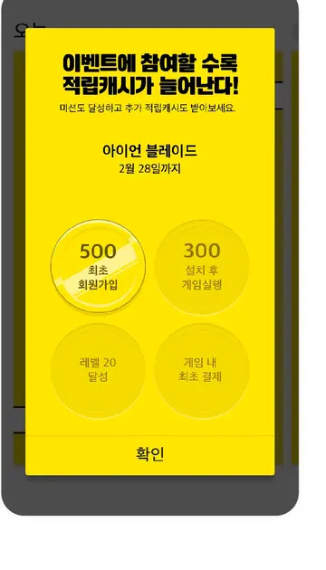
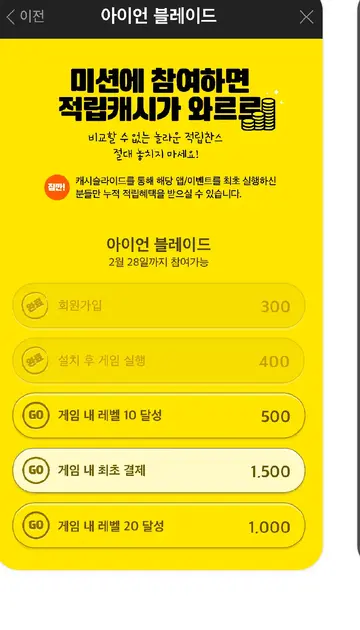
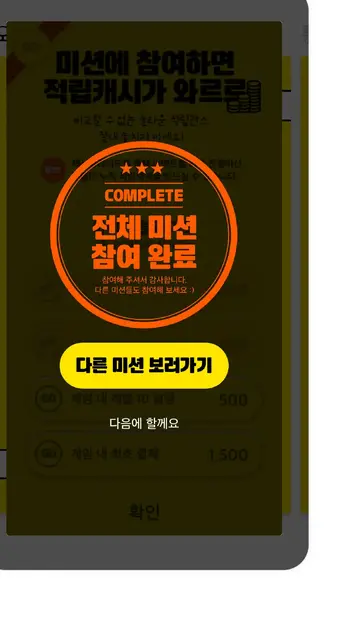
동일한 리워드 원칙을 즉시 보상, 개인 목표, 누적 가치, 사용처 확장에 연결했습니다.
행동과 보상 사이의 거리를 짧게 유지했습니다.
목표 달성에는 추가 보상을 붙여 행동을 이어갔습니다.
매일의 작은 보상이 한 달의 가치로 보이게 했습니다.
쌓인 캐시는 사용처를 통해 실질적인 보상으로 전환했습니다.
걷기
상태 확인
메이트 반응
보상·미션
다시 방문
두 수치는 동일한 DAU 기준의 기존 포트폴리오 기록입니다. 외부 기사 수치와 혼합하지 않고 내부 성과 지표로 별도 표기했습니다.
2018년 NBT가 공개한 당시 설명 기준으로, 전체 캐시슬라이드 플랫폼 이용자의 약 20%가 Stepup을 이용한 것으로 소개됐습니다.
만보기에서 습관 형성으로 제품의 문제와 경험 방향을 구체화했습니다.
UX 구조·GUI를 설계하고 개발 Follow-up으로 의도한 경험을 구현했습니다.
출시 후 사용 데이터와 UT·FGI를 통해 실제 반응과 개선 지점을 확인했습니다.
확인된 신호를 다음 기능과 UX 개선으로 돌려 제품의 반복 사용을 키웠습니다.
iOS 확장 당시 기존 안드로이드 운영 경험을 바탕으로 사용 환경과 편의성을 보완했고, 기존 캐시슬라이드·Stepup 계정이 이어지도록 경험의 연속성을 유지했습니다.
기존 포트폴리오 기록 기준 UX 기획·설계, GUI, 개발 Follow-up, 출시 후 UT·FGI까지 전 과정에 참여했습니다. 캐릭터 원화 제작은 역할에서 제외합니다.
NBT 공개 자료를 인용한 2018년 보도 기준. 초기 서비스 확산 속도를 보여주는 외부 공개 지표입니다.
App Annie 분석치를 NBT가 공개하고 언론이 보도한 수치입니다. DAU와 혼합하지 않고 MAU로 별도 표시합니다.
기존 포트폴리오에 기록된 내부 지표입니다. 외부 기사에서 독립 검증된 수치와 구분해 표기합니다.
NBT 공식 아카이브가 2020.11 기준 약 2조 2,472억 걸음을 소개한 장기 후행 지표입니다.
걸음을 측정하는 것보다,
다음 걸음을 만드는 것에 집중했습니다.
시작은 단순한 만보계 앱을 만드는 일이었습니다. 하지만 본질은 사용자가 계속 돌아올 이유를 만드는 일이었습니다. 그래서 제품의 방향을 걷는 습관을 만들고, 건강과 리워드를 함께 얻는 서비스로 전환했습니다. 소소한 즐거움이 의미 있는 결과로 이어지는 경험을 전달하고 싶었습니다.